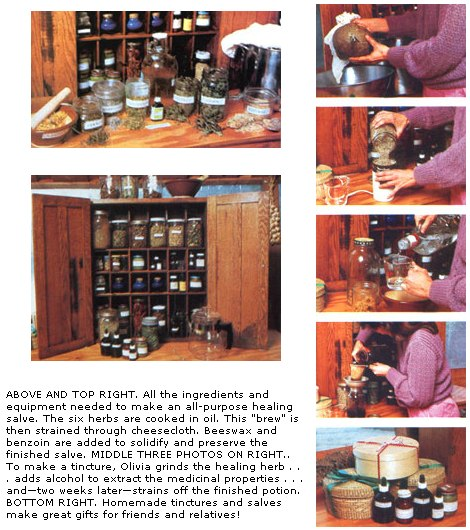

Creator of All Good Things. . .
We thank you
for the beauty of the plant,
for the strength of its healing,
for the goodness of its color,
for the strength of its smell,
and the cleanness of its spirit.
- from Song of the Seven Herbs , by Walking Night Bear
In the last issue, I told you about seven of my favorite medicinal herbs: comfrey, echinacea, garlic, angelica, valerian, chamomile, and calendula. I described how to grow them, each one's medicinal functions, and an array of ways-such as in teas, poultices, and oils-to use them.
This time around, I'm going to share how to make my favorite forms of herbal remedies-tinctures and salves. While I still steep teas and make poultices when need be, more and more these days I'm using the medicines I'll describe in this article. I like herbal remedies that are already made up, because they're so easy to use when I'm sick. (There's nothing worse than having to fix up an elaborate preparation when you're hardly able to get out of bed!)
What's more, tinctures and salves last much longer than dried leaves, flowers, or roots stored in bottles. I can make up a batch of rosemary headache tincture or all-purpose healing salve that will last me three or four years. Actually, my homemade medicines would last that long, except for one thing: So many other people find them useful that I end up giving a lot of them away! Try out some of the following preparations yourself-you'll soon see what I mean.
Tinctures are highly concentrated liquid extracts of herbs. (Don't get these confused with commercially available fluid extracts or essential oils. Those are made through a process of multiple solvent extraction and are up to ten times as potent as homemade tinctures.)
To make a tincture, combine four ounces of powdered or cut herbs with one pint of alcohol (I use vodka, but brandy, gin, rum, or even glycerin would also do). . . let the mixture sit for two weeks (shake it a few times daily) . . . strain off the liquid . . . and bottle it. That's all there is to it! The alcohol extracts both the volatile oils and themedicinal alkaloids of the herbs.
Let me go step-by-step through the process the way I do it. First I grind up the herb or herbs I'm going to use-either with a mortar and pestle or in an electric coffee grinder. (By the way, if you're going to use store-bought herbs in a tincture, buy whole, not powdered, ones for their greater medicinal potency.) Then I mix herb and alcohol in a jar, seal the container, and cover it with a dark cloth to keep out light. I leave it on a kitchen shelf so I'll see it and remember to shake the jar a couple of times a day. Two weeks later, I strain off the liquid through a double layer of cheesecloth. Then I pour the finished tincture into dark dropper bottles (you can purchase these at a drugstore) and label them. I use one-ounce bottles for most tinctures, but two-ounce vessels for my echinacea tincture because I tend to take large doses of it. And I always label my jars right after I bottle them, or else I may forget altogether.
One last thing: I mix all my tinctures on the day of the new moon and strain them off on the full moon, so the drawing power of the waxing moon will help extract the plants' properties.
Here, then, are the six tinctures I make (there are plenty of others!) and the ways I use them.
Antibiotic tincture: I make this from four parts fresh garlic . . . four parts fresh nasturtium leaves and flowers . . . and one part echinacea root. (You can also use echinacea's leaves or flowers.) Use four ounces of this mixture per pint of vodka. Garlic is a natural antibiotic that attacks harmful bacteria. Nasturtium is an antiseptic and helps one expel mucus from the lungs and throat. And echinacea is an excellent antibiotic, blood purifier, and lymphatic cleanser. The usual dose of this antibiotic tincture would be one-half dropperful every two hours for two days, then twice a day for two weeks. I take it whenever I want to fight an infection.
Echinacea tincture: Actually, I'm so fond of echinacea that I more often make a pure tincture of this herb. Then, whenever I feel a cold coming on, I'll start the dosage sequence just mentioned and rid myself of the malady before it becomes a problem. (Sometimes, if I stop taking the remedy before the two weeks are up-because I'm feeling so much better-the ailment comes right back.) I also use the pure echinacea tincture when I'm feeling sluggish or my blood needs purifying-after eating a lot of chemical-laced food, for instance.
Rosemary headache tincture: This herbal remedy, made from good old garden rosemary (Rosmarinus officinalis), can get rid of many headaches instantly. Try it! Take a half dropperful if you have a headache and another half dropperful in a half hour if the first one didn't work . . . but no more for at least eight hours.
Angelica tincture: I often use this tincture-made from the roots of the angelica plant-to strengthen my lungs and sharpen my mental faculties. I'll take a dose of one teaspoon twice a day for either use. If you read my article last issue, you'll recall that angelica root can also be used to warm the body (try from three to thirty drops for this), to relieve stomach and intestinal gas and spasms, and to reduce one's desire to drink alcoholic beverages. Remember, though, pregnant women should not take any angelica, as it also promotes menstruation!
Valerian tincture: I use a tincture made from the root of Valeriana officinalis as my favorite sedative for myself and my three-year-old boy, Stuart. I use a quarter dropperful for Stuart and a half dropperful for myself. Other nerve-relaxing doses I've seen recommended are ten to thirty drops for adults, five to fifteen drops for a six- to twelve-year-old, and one drop to calm a baby . . . or a dab on a baby's gums to soothe teething pains. (Some herbalists, though, recommend only chamomile-a milder herb than valerian-as a sedative for small children.) I've also used it to ease a friend's muscle spasms (one-half dropperful every four hours) and to help ease a fellow gardener's epilepsy (one-half dropperful twice a day).
Calendula tincture: I often add a drop of calendula tincture (made from the flower heads of Calendula officinalis, or pot marigold) to cuts to stop bleeding and promote healing. I even applied some directly on a pig that had had a cesarean section, and she healed quickly!
I also take it internally for bruises, measles, any eruptive skin disease, and cramps. The dosage would be five to fifteen drops for sixto twelve-year-olds and ten to thirty drops (or one-half dropperful) for adults. Take it twice a day.
Salves are herbal skin ointments. The basic ingredients are an herb (or, more often, a combination of herbs), an oil, beeswax, and a preservative. To make a salve, first heat the herbs in the oil, using about two ounces of herbs per pint of oil. The best oils for this purpose are sesame and olive. Others can be used, including nondrying oils (such as apricot, coconut, avocado, and castor, as well as cocoa butter) for massage or for treating dry skin . . . semidrying oils (like safflower, sunflower, and wheat germ) . . . and drying ones (such as soybean and linseed).
Heat the oil to just below the boiling point. Add any roots or barks, and let them cook in a covered stainless steel or enamel-not aluminum-pot at that not-quite-boiling temperature for two hours. Add any leaves and flowers next and continue to cook gently for another hour. If you're not using any barks or roots, cook your less volatile herbs for the first two hours and add your more volatile ones after that. Also, if you're using fresh herbs, you might want to cook them uncovered for a while to help evaporate the water in them.
Once your ingredients are all cooked, strain the mix: Line a strainer with a double thickness of cheesecloth, pour the oil through into another pot, and then squeeze the residual liquid out of the remaining ball of herbs.
Now add beeswax (you can buy this at a health food store or, less expensively, directly from a beekeeper) . . . about 1-1/2 ounces per pint of oil. Be cautious here . . . you don't want to add too much. Also, for each quart of salve stir in one teaspoon tincture of benzoin or gum benzoin, commercial preservatives available at drugstores. This is important; you may apply the salve to broken skin, so you want to be sure it's free of bacteria.
When all the ingredients have been added, test the salve's consistency by setting a spoonful of it in, the refrigerator to cool. In a few minutes, check your sample's hardness. If it's too thin, add more beeswax to your brew, and test again. When you've got the consistency you want, immediately pour the salve into small jars-don't let it cool and solidify in the pot! (I use baby food jars and acquire them inexpensively by buying old, outdated jars of food at a discount at grocery stores.) And don't forget to label your jars. The finished salve may be stored and used for years.
There are dozens of good recipes for herb al salves. At this point, though, I make mainly two:
All-purpose healing salve: This is a wonderful salve. I use it on all of my family's cuts and wounds to help stop the bleeding, soothe the pain, and promote healing. Just rub it on the injured spot as often as desired.
As just one example of how well it works, I cut the tip-top of one finger off once while preparing food for canning. I put some salve on my finger, put the piece back on with a Band-Aid, and went back to work. The finger hurt only minimally and healed completely in several days. (Of course, if you suffer serious burns or cuts, you should get appropriate medical help.)
The recipe calls for 1-1/2 ounces of comfrey leaves (these aid in cell production) . . . 3/4 ounce of plantain leaves (these promote healing and help protect the skin) . . . 3/4 ounce of chickweed leaves (to help reduce inflammation). . . 1/2 ounce of yarrow leaves (an antibacterial agent) . . . 1/2 ounce of calendula flowers (these promote healing) . . . and 1/2 ounce of wormwood leaves (to help relieve pain). I brew them together for two to three hours or overnight, depending on whether the herbs are dry or green . . . I cook the comfrey, plantain, and chickweed longer than the more volatile yarrow, wormwood, and calendula.
Itching and rash salve: The main ingredients of this salve are 8 ounces of fresh chickweed leaves and 4 ounces of comfrey leaves per 16 ounces of oil. It is an excellent remedy for all itching and rash ailments. It's particularly good for treating diaper rash and poison ivy or oak- after you've carefully cleaned the area of the harmful oils.
Homemade tinctures and salves are like homegrown foods-I can feel good about them because I made them and know their quality and contents. There's nothing more satisfying for me than healing myself, my family, and my friends with herbs I've grown and turned into tinctures and salves.
The recipes for homegrown medicines I gave here are the ones I make and always have on hand. They're not much trouble to prepare and they're as easy to use as any drugstore product. Along with the remedies I shared in Part I of this article, these tinctures and salves can give you a good start on creating your own homegrown herbal medicine chest.
There's a lot more you can learn about medicinal herbs, and there are people much more knowledgeable than I am. I learned almost everything I've shared in this article from Donna Leight and Leslie Tierra, two acupuncturists and herbalists currently practicing in Santa Cruz, California. And, as I did last time, I'd like to wholeheartedly recommend Michael Tierra's The Way of Herbs ($5.70 postpaid from Simon & Schuster, Mail-Order Department, 1230 Avenue of the Americas, New York, NY 10020). Of the 15 herb books I have, it's the one that I really use.
One last thing: Let me remind you to always pay close attention to your body. Listen to it. Be sensitive to the herbs you use and how they are affecting you-let that help you determine if you're using too much or too little. Most important, remember that the real key to good health is proper eating. Herbs, like all self-care measures, are most effective when used in conjunction with proper diet.
EDITOR'S NOTE: The herbal remedies in this article should not be used as substitutes for professional medical attention for any serious health disturbance or for any chronic warning symptoms. When in doubt, consult your physician.
Song of the Seven Herbs-the book quoted in this article's precede-is available for $10.45 postpaid from Dream Feather Productions, P.O. Box 3097, Auburn, CA 95603.
I want to share one last herbal remedy with you here. You can't make this aid from homegrown herbs (it uses commercially produced edible herb oils), but it works so well it's become my all-time favorite remedy.
It's called treeflower oil. I use it to stimulate my immune system and defensive energies. It's warded off colds, flus, sore throats, headaches, morning sickness, and nausea. (It's also quite a stimulant.) You just take a tiny drop of it at a time: I often dab it on my finger and then put that in my mouth. In the acute stage of an illness, I may take it every half hour; otherwise, once every two hours is enough. I often take it along with my echinacea tincture, because I feel if I use the two together, 1 can get rid of almost any illness that's coming on.
To make treeflower oil, you'll have to or der some high-quality edible oils. (Keihls Company in New York makes the best- get your local health food store to order them.) You need camphor oil... eucalyp tus oil. . . cinnamon oil. . . clove oil. . . peppermint oil . . . rosemary oil . . . and ginger oil. Combine equal parts of each, store the mixture in an eyedropper bottle, and you'll have as close a thing to an "herb al miracle cure" as I've discovered. Do remember, though, to use treeflower oil only for medicinal purposes.
|
 |
|
|